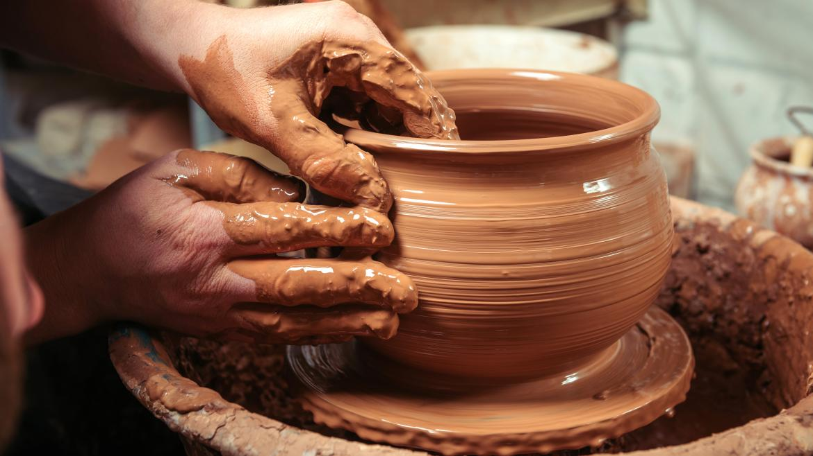

Culturas
La cultura jujeña, perteneciente a la provincia de Jujuy en el noroeste de Argentina, es rica en tradiciones y costumbres que reflejan una profunda herencia indígena, mestiza y española.
Musica y Danzas


Artesanias

idioma y Religion

Somos Juuy
Costumbres
Es una de las festividades más importantes y se celebra con gran entusiasmo. Durante el Carnaval, los jujeños participan en desfiles, bailes y rituales que mezclan tradiciones indígenas y católicas. Uno de los momentos clave es el desentierro del diablo, una figura simbólica que representa la liberación de las energías y el inicio de la celebración. Al finalizar el Carnaval, se realiza el entierro del diablo, simbolizando el fin de la fiesta y el retorno a la vida cotidiana.
La ceremonia de la Pachamama, que se celebra en agosto, es una de las costumbres más antiguas y respetadas. Se realiza una ofrenda a la Madre Tierra, agradeciendo por los frutos y la protección brindada durante el año. Durante la ceremonia, se cava un pozo en la tierra donde se colocan ofrendas como alimentos, hojas de coca, bebidas, y otros productos de la tierra, mientras se pide por la fertilidad y la prosperidad.
Durante el Carnaval y otras festividades, es común la práctica de la chaya, que consiste en arrojarse harina, albahaca, y agua perfumada entre los participantes, simbolizando la purificación y la alegría compartida. Es una costumbre muy arraigada en las celebraciones jujeñas.